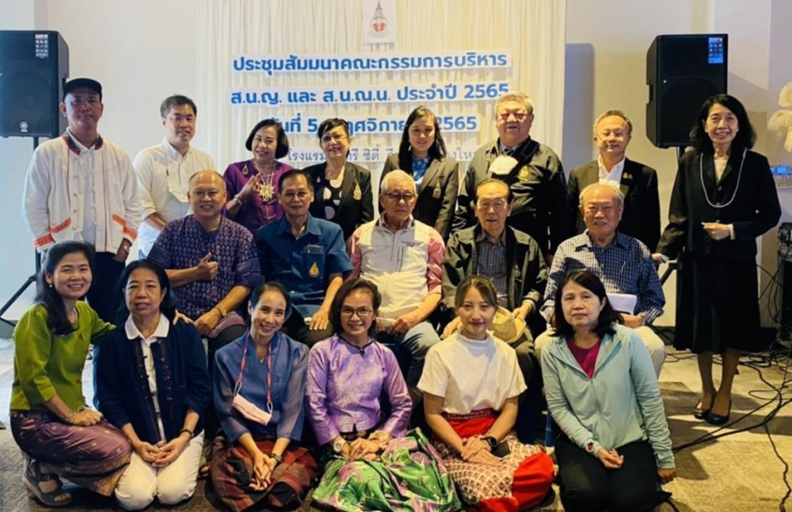

การสัมมนาร่วม คณก.บริหาร ส.น.ญ.(กรุงเทพ) และ ส.น.ญ.(สาขาภาคเหนือ)
เนื้อหาตามประกาศ ณ วันที่เผยแพร่ โปรดตรวจสอบกำหนดการและเงื่อนไขก่อนดำเนินการ
สมาคมนักเรียนเก่าญี่ปุ่น ในพระบรมราชูปถัมภ์ นำโดย คุณ อภิชย์ รักไพฑูรย์ นายก ส.น.ญ. พร้อมด้วย ที่ปรึกษาและคณะกรรมการบริหาร ร่วมกับ สมาคมนักเรียนเก่าญี่ปุ่น ในพระบรมราชูปถัมภ์ สาขาภาคเหนือ นำโดย ผศ.ธนานัทธ ปัญโญ ประธาน ส.น.ญ.น. ที่ปรึกษาและคณะกรรมการบริหาร จัดการสัมมนาร่วมภายใต้หัวข้อ One Team Together “OJSAT & OJSATN” 2022 เมื่อวันเสาร์ที่ 5 พฤศจิกายน 2565 เวลา13.00 -16.30 น. ณ โรงแรมวินทรี ซิตี้ รีสอร์ท เชียงใหม่ โดยมีวัตถุประสงค์เพื่อแลกเปลี่ยนเรียนรู้การดำเนินกิจการ กิจกรรม ของสมาคมฯ ระหว่างกัน รวมไปถึงการเสนอแนวทางที่จะทำให้สมาคมฯ มีความเข้มแข็ง มั่นคง และยั่งยืนต่อไป ซึ่งในช่วงของการระดมความคิดเห็น ได้ปรับจัดแบ่งกลุ่มผู้เข้าร่วมประชุมเป็นจำนวน 3 กลุ่ม เพื่อนำเสนอแนวคิด แนวปฏิบัติซักถามร่วมกันในที่ประชุม
และในช่วงของการประชุม นายก ส.น.ญ. และ ประธาน ส.น.ญ.น. ได้กล่าวขอบคุณทุกท่านผู้เข้าร่วมประชุมสัมมนา และหวังว่าเราจะมีโอกาสประชุมสัมมนาแบบนี้อีกที่ กทม. ทั้งในรูปแบบ Onsite หรือแบบ Online ด้วยกัน เพื่อระดมความคิดร่วมกันอันนำไปสู่การดำเนินงานของสมาคมฯ ที่มีประสิทธิภาพและประสิทธิผล เกิดประโยชน์ ความผูกพันกับสมาชิกฯ และมีผลกระทบกับชุมชน
ในช่วงท้ายของการประชุมสัมมนา คุณคมกฤช สุตธรรม ที่ปรึกษา ส.น.ญ. ได้สรุปฝากทิ้งท้ายในที่ประชุม “สมาคมฯ โดย คณะกรรมการบริหารฯ ทุกรุ่น ควรดูแล รักษาความสัมพันธ์สมาชิกฯ อย่างต่อเนื่อง โดยเฉพาะสมาชิกฯ ที่อุทิศตน มีคุณูปการให้ เสียสละ แบ่งปัน…กับสมาคมฯ ในขณะเดียวกันก็ไม่ละทิ้งสมาชิกฯ สมาคมฯ โดยรวมด้วยเช่นกัน”

